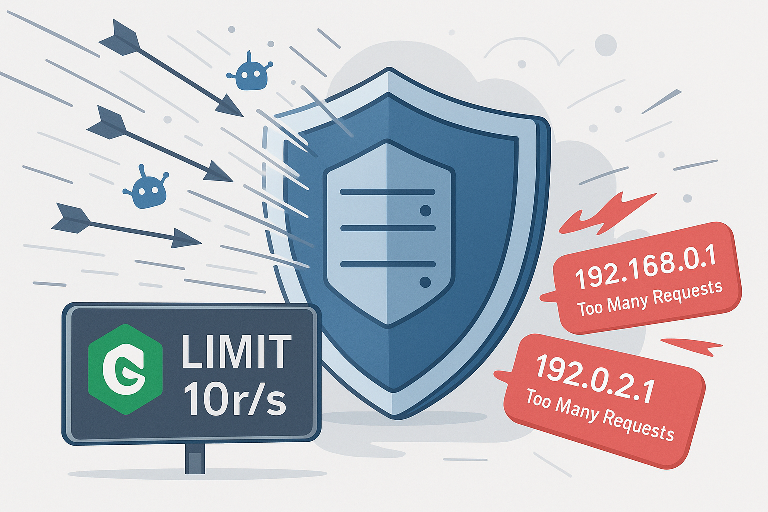

Введение
При работе с динамическими приложениями (например, XenForo, другие PHP-фреймворки или WebSocket-сервисы) защита от агрессивных клиентов и ботов крайне важна.
В этой статье мы рассмотрим, как в nginx реализовать:
- Ограничение количества запросов (rate limiting) на уровне одного IP для динамических HTTP-запросов.
- Защиту WebSocket-коннектов (чтобы лимиты применялись к handshake-запросам и потенциально к «тяжёлому» обмену данными).
- Интеграцию с iptables и fail2ban для жёсткого блокирования IP-адресов, которые постоянно превышают пороги.
Также предположим, что перед nginx стоит DDoS-Guard (или другой прокси-провайдер), и нам важно видеть реальные IP клиентов.
1. Обзор ключевых механизмов
- limit_req_zone / limit_req
- Позволяют ограничить число запросов в секунду (или минуту) с одного IP, используя алгоритм «token bucket».
- Подходят для HTTP-запросов (GET/POST/AJAX).
- limit_conn_zone / limit_conn
- Ограничивают количество одновременных соединений с одного IP.
- Полезны там, где важно не допустить «потоку открытых TCP-коннектов» (например, WebSocket, долгоживущие чаты).
- real_ip_header / set_real_ip_from / real_ip_recursive
- Обеспечивают nginx «видеть» реальный IP клиента, а не адрес прокси-провайдера.
- Обязательно нужно настроить, если перед nginx стоят CloudFlare, DDoS-Guard или другие reverse-proxy.
- iptables (hashlimit / connlimit)
- Жёсткая фильтрация на уровне ядра — не позволяет превысить заданный порог открытий новых TCP-соединений или пакетов UDP/TCP.
- Срабатывает раньше, чем nginx получит запрос, поэтому «экономит» ресурсы web-стека.
- fail2ban
- Мониторит логи nginx (или iptables), и при слишком частых 429/503/других ошибках бана ставит «длительный» бан на IP.
- Закрывает «хвостовые» агрессивные IP-адреса.
2. Подготовка nginx к учёту реальных IP
Если вы используете DDoS-Guard или другую CDN/прокси, то без явной настройки real_ip nginx будет видеть адрес прокси вместо клиента.Как настроить:
Код:
# В самом начале nginx.conf (http { ... }) или в include-файле:
# Задаём диапазоны IP-адресов вашего провайдера (например, DDoS-Guard):
# Эти адреса могут отличаться — уточните актуальный диапазон у DDoS-Guard.
set_real_ip_from 185.178.209.0/24; # пример IPv4-диапазона DDoS-Guard
set_real_ip_from 2a06:1100::/32; # пример IPv6-диапазона DDoS-Guard
# Говорим nginx: «логируй реальный IP из заголовка X-Forwarded-For»
real_ip_header X-Forwarded-For;
real_ip_recursive on;- set_real_ip_from — CDN/прокси заносим в «белый список»: оттуда будем брать реальный IP.
- real_ip_header X-Forwarded-For — в этом заголовке прокси передаёт исходный IP.
- real_ip_recursive on — если цепочка из нескольких прокси, берём самый левый (первый) IP, а не последний.
3. Ограничение скорости запросов (rate limiting)
3.1. Определяем зоны (limit_req_zone)
В блоке http { ... } заводим две зоны:- Для динамических HTTP-запросов (XenForo, API, AJAX).
- Для WebSocket-хендшейка (ограничение на количество initial-запросов /ws).
Код:
http {
##
# … прочие директивы (include mime.types, gzip, sendfile и т.д.) …
##
# 1) Зона для динамики: 10 запросов в секунду с одного IP, burst 20
# (rate 10r/s означает: регулярное пополнение 10 токенов/сек. burst = 20 позволяет пик до 30 req за краткий момент)
limit_req_zone $binary_remote_addr zone=dynamic_zone:10m rate=10r/s;
# 2) Зона для WebSocket-handshake (например, все запросы на /ws)
# Тут можно задать чуть больше или меньше — зависит от характера WS-потока
limit_req_zone $binary_remote_addr zone=ws_zone:10m rate=5r/s;
##
# … далее ваши другие настройки …
##
}- Почему две зоны?
- Динамические страницы (XenForo-PHP) и handshake WebSocket по факту — разные «категории» трафика.
- Можно задать разные пороги: динамика (пик AJAX-запросов) ≈ 10 r/s, а WS-хендшейк (он возникает редко, только при установлении соединения) ≈ 5 r/s.
- 10m и 10m — объём памяти, выделяемый на "таблицу состояния" для каждой зоны (примерно 160 000 уникальных IP).
3.2. Применяем лимиты в server / location
В конфигурации вашего виртуального хоста (обычно /etc/nginx/sites-enabled/your-site.conf) добавляем:
Код:
server {
listen 80;
server_name example.com www.example.com;
# 1. Для хостинга статических и кешированных страниц (не лимитируем):
location ~* \.(jpg|jpeg|png|gif|css|js|ico|svg)$ {
expires 30d;
access_log off;
add_header Cache-Control "public";
try_files $uri @dynamic;
}
# 2. Обработчик WebSocket (например, URL /ws)
location /ws {
# Сразу же накладываем лимит на handshake:
limit_req zone=ws_zone burst=10 nodelay;
# -- burst=10: можно допустить всплеск до 10 запросов сверх 5r/s
# -- nodelay: лишние сразу обрежем, не станем ставить в очередь
# Дальнейшая стандартная прокси-конфигурация для WS:
proxy_pass http://backend_ws; # ваш upstream для WS
proxy_http_version 1.1;
proxy_set_header Upgrade $http_upgrade;
proxy_set_header Connection "Upgrade";
proxy_set_header Host $host;
proxy_set_header X-Real-IP $remote_addr;
}
# 3. Основной location, где живёт XenForo (или другое PHP-приложение)
location / {
# Лимитируем все обычные (HTTP) запросы
limit_req zone=dynamic_zone burst=20 nodelay;
# -- burst=20: допускаем «всплеск» до 30 req, при этом rate=10r/s постоянно пополняет токены
# Проксируем всё к Apache (или PHP-FPM) на бэкенд
proxy_pass http://backend_php;
proxy_set_header Host $host;
proxy_set_header X-Real-IP $remote_addr;
proxy_set_header X-Forwarded-For $proxy_add_x_forwarded_for;
proxy_set_header X-Forwarded-Proto $scheme;
}
# 4. Ошибка, когда лимит превышен (код 429) — можно настроить кастомную страницу
error_page 429 = /custom_429.html;
location = /custom_429.html {
internal;
default_type text/html;
return 200 '<h1>429 Too Many Requests</h1><p>Пожалуйста, подождите немного прежде чем отправлять новый запрос.</p>';
}
##
# … остальная конфигурация (static, SSL, редиректы) …
##
}- limit_req zone=dynamic_zone burst=20 nodelay;
- burst=20 — позволяет «накидать» дополнительный буфер в 20 токенов. При rate=10r/s за одну секунду добавляется 10 токенов, плюс из burst можно взять ещё 20. Итого за 1 секунду максимум 30 запросов, после чего дальнейшие запросы моментально блокируются.
- nodelay означает: не ждём, а сразу отклоняем лишние. Если убрать nodelay, nginx будет «ставить в очередь» до тех пор, пока корзина не пополнится.
- limit_req zone=ws_zone burst=10 nodelay;
- Handshake WebSocket — единичный/редкий HTTP-запрос (GET /ws с хэдером Upgrade). Поэтому даже 5r/s может быть вполне достаточно. Если вы ожидаете, что пользователи часто релоадят страницу и переподключаются, можно чуть увеличить burst (до 10).
4. Ограничение одновременных соединений (limit_conn)
Кроме скорости (requests/sec), часто нужно ограничивать количество одновременных TCP-коннектов с одного IP. Это полезно, чтобы один и тот же IP не держал открытыми сотни WS-сессий или HTTP keep-alive-потоков.
4.1. Настраиваем зоны для limit_conn
В блоке http { ... } рядом с limit_req_zone добавьте:
Код:
http {
##
# … ранее созданные limit_req_zone …
##
# Зона для одновременных HTTP-соединений (keep-alive + новые запросы)
limit_conn_zone $binary_remote_addr zone=conn_zone:10m;
# Зона для одновременных WebSocket-коннектов (каждое upgrade-соединение считаем отдельно)
# Будем отличать WS по ключу (к примеру, по $binary_remote_addr:$server_port)
limit_conn_zone $binary_remote_addr zone=conn_ws_zone:10m;
##
# … остальная конфигурация …
##
}- zone=conn_zone:10m — зона для счётчика одновременных HTTP/TCP коннектов (сложим все TCP-сессии, в которых клиент «просто ждёт» keep-alive или шлёт новые запросы).
- zone=conn_ws_zone:10m — отдельная зона, чтобы понимать, сколько именно открытых WS-коннектов у данного IP.
Код:
server {
listen 80;
server_name example.com;
# 1. Ограничиваем одновременные HTTP-соединения (keep-alive + запросы)
# Например, не более 20 одновременных коннектов от одного IP
# (здесь и далее $binary_remote_addr — это IP клиента из real_ip)
location / {
limit_conn conn_zone 20;
limit_req zone=dynamic_zone burst=20 nodelay;
proxy_pass http://backend_php;
proxy_set_header X-Real-IP $remote_addr;
# … другие заголовки …
}
# 2. Ограничиваем WebSocket-коннекты (upgrade-сессии)
location /ws {
limit_conn conn_ws_zone 5;
limit_req zone=ws_zone burst=10 nodelay;
proxy_pass http://backend_ws;
proxy_http_version 1.1;
proxy_set_header Upgrade $http_upgrade;
proxy_set_header Connection "Upgrade";
proxy_set_header X-Real-IP $remote_addr;
}
# 3. Статика (не ограничиваем или минимально ограничиваем)
location ~* \.(css|js|jpg|png|gif|ico|svg)$ {
# Если хотите жестко, можно limit_conn conn_zone 50;
expires 30d;
access_log off;
}
# 4. Стандартные error_page, логирование и прочие настройки
…
}- limit_conn conn_zone 20; — означает: не более 20 одновременных TCP-сессий (HTTP-соединений) с одного IP.
- Keep-alive-сессия считается «занятой», даже если клиент просто ждёт.
- Плюс каждый новый запрос (если Connection: keep-alive) тоже увеличит счётчик, но после ответа соединение либо закроется, либо ждёт idle-таймаут (keepalive).
- limit_conn conn_ws_zone 5; — не более 5 одновременно открытых WebSocket-коннектов (т. е. подключённых /ws-сессий) с одного IP.
5. Автоматическая блокировка чрезмерных нарушителей (fail2ban)
Даже при наличии rate- и conn-лимитов иногда полезно выбрасывать «долгоиграющие» агрессивные IP из списка навсегда (или на длительное время). Для этого настраиваем fail2ban, чтобы он читал логи nginx и реагировал на избыток 429/503.5.1. Настройка логирования в nginx
В файле nginx.conf (или в virtual host) убедитесь, что у вас есть отдельный лог ошибок для лимитов:
Код:
http {
# …
server {
# …
# Логируем лимитированные запросы в отдельный файл
limit_req_status 429;
error_log /var/log/nginx/limit_errors.log notice;
# Можно также выводить в access_log подробности (если нужно):
# лог-формат, где при 429 выводится «LIMIT»
}
}- limit_req_status 429 — заставляем nginx возвращать код 429 (по умолчанию 503) при лимите;
- error_log /var/log/nginx/limit_errors.log notice — логируем notice-сообщения (включая «limiter»).
5.2. Конфиг fail2ban (пример для Ubuntu/Debian)
- Создаём фильтр /etc/fail2ban/filter.d/nginx-limit.conf:
-
Код:
[Definition] # Ищем в логе nginx: «limiter» или «limiting» failregex = limiting requests, excess:.* by zone "dynamic_zone" limiting requests, excess:.* by zone "ws_zone" \[notice\] .*limiter: *limiting ignoreregex = - Создаём джейл /etc/fail2ban/jail.d/nginx-limit.conf:
-
Код:
[nginx-limit] enabled = true filter = nginx-limit action = iptables[name=nginx-limit, port=http, protocol=tcp] logpath = /var/log/nginx/limit_errors.log bantime = 3600 ; блокировать на 1 час findtime = 600 ; смотрим за последние 10 минут maxretry = 20 ; если 20 раз в течение 10 минут попал в limit → бан - Перезапускаем fail2ban:
-
Код:
sudo systemctl restart fail2ban
6. Конфигурация nginx + upstream для XenForo (пример «из коробки»)
Предположим, у нас есть два upstream-блока:
Код:
upstream backend_php {
server 127.0.0.1:8080; # Apache (mpm_event + php-fpm)
}
upstream backend_ws {
server 127.0.0.1:8090; # Отдельный сокет-сервер (Node.js / Ratchet / любой WS-бекенд)
}Полная конфигурация server {} может выглядеть так:
Код:
server {
listen 80;
server_name forum.example.com;
# 1. Настройка real_ip для прокси (уже описана ранее)
set_real_ip_from 185.178.209.0/24;
real_ip_header X-Forwarded-For;
real_ip_recursive on;
# 2. Общие limit-зоны (http {} уже прописал их утром)
# 3. Сервис статики: CSS/JS/картинки/файлы XenForo
location ~* \.(?:css|js|gif|jpe?g|png|svg|woff2?|ttf)$ {
# Поскольку это статика, не накладываем limit_req (лишь минимальный limit_conn, если нужно)
limit_conn conn_zone 50; # макс. 50 одновременных keep-alive-коннектов с одного IP
access_log off;
expires 7d;
# Читаем из папки XenForo: /var/www/forum/
root /var/www/forum/;
try_files $uri $uri/ =404;
}
# 4. WebSocket (например, чат или real-time уведомления)
location /socket {
# Ограничиваем handshake
limit_conn conn_ws_zone 5;
limit_req zone=ws_zone burst=10 nodelay;
proxy_pass http://backend_ws;
proxy_http_version 1.1;
proxy_set_header Upgrade $http_upgrade;
proxy_set_header Connection "Upgrade";
proxy_set_header Host $host;
proxy_set_header X-Real-IP $remote_addr;
}
# 5. Основные запросы к XenForo (динамические страницы / AJAX / формы)
location / {
# Ограничиваем скорость: 10 запросов в секунду, всплеск до 20
limit_req zone=dynamic_zone burst=20 nodelay;
# Ограничиваем максимально 20 одновременных HTTP-сессий
limit_conn conn_zone 20;
# Проксируем на Apache
proxy_pass http://backend_php;
proxy_set_header Host $host;
proxy_set_header X-Real-IP $remote_addr;
proxy_set_header X-Forwarded-For $proxy_add_x_forwarded_for;
proxy_set_header X-Forwarded-Proto $scheme;
# Если backend возвращает 502/504 или ему долго отвечать, можно вернуть кастомный 503
proxy_connect_timeout 5s;
proxy_read_timeout 60s;
proxy_send_timeout 60s;
}
# 6. Обработка ошибок 429 (угроза превышения лимита)
error_page 429 = /429.html;
location = /429.html {
internal;
default_type text/html;
return 200 '<h1>Слишком много запросов</h1><p>Пожалуйста, делайте перерыв между действиями.</p>';
}
# 7. Логи
access_log /var/log/nginx/forum.access.log main;
error_log /var/log/nginx/forum.error.log warn;
# Лог лимитов
limit_req_status 429;
error_log /var/log/nginx/forum_limit.log notice;
}- Статика отдаётся прямо nginx без PHP, только с limit_conn conn_zone 50. Это не мешает CDN-кешированию и даёт форуму «надышаться», когда боты ломанулись за картинками.
- WebSocket обрабатывается отдельно, ведь у него свои особенности proxy_http_version 1.1 и хедеры Upgrade/Connection.
- Динамика (все остальные URL) йдут на Apache, но перед этим проходят через limit_req zone=dynamic_zone и limit_conn conn_zone.
- Также не забудьте настроить fail2ban, для блокировки IP.
9. Рекомендации по настройке и отладке
- Точная настройка порогов
- Для XenForo-форумов часто достаточно 5–10r/s и burst=10–20, а не «потолок в 50r/s».
- Чем больше у сайта «тяжёлых» плагины или сложные SQL-запросы, тем выше нужно ставить пороги.
- Мониторинг и тестирование
- Используйте утилиты нагрузочного тестирования (ab, wrk, siege) с разными профилями, чтобы увидеть, при каких значениях порогов ваш сервер ещё комфортно справляется с динамикой.
- Проверяйте, как ведёт себя форум при «полусимуляции» реального трафика: исполняйте ряд AJAX-вызовов, регистраций, постов и тд.
- Логирование
- Обязательно ведите отдельный лог лимитов (forum_limit.log), чтобы потом проанализировать, какие IP наиболее агрессивны.
- В access_log добавьте формат, где показываются хедеры X-Forwarded-For и $status, чтобы видеть, кто и сколько раз получил 429.
- Keep-Alive-таймауты
- В nginx:
-
Код:
keepalive_timeout 20s; keepalive_requests 100;
- В Apache (если он «самостоятельно» обслуживает статику или есть прямой доступ):
-
Код:
KeepAliveTimeout 5 MaxKeepAliveRequests 100- Короткий таймаут (10–20 секунд) позволит «ускорить» освобождение HTTP-коннектов и уменьшить нагрузку «спящих» TCP-сессий.
- Кэширование динамических страниц
- Для XenForo обязательно включите Full Page Cache (FPC) или сторонний nginx FastCGI cache, чтобы тяжёлые динамические запросы (например, просмотр тем) отдавались как статические HTML, минуя PHP. Тогда реальная «нагрузка PHP» снизится в 5–10 раз, и вы сможете увеличить пороги rate без страха.
- Регулярно проверяйте
- Пересматривайте limit_req_zone и connlimit каждые несколько недель, особенно после апгрейда форума, изменения поведения аудитории или роста посетителей.
10. Заключение
Защита динамических соединений на nginx строится на комбинации:- Видимости реального IP (через real_ip), чтобы лимиты применялись именно к конечному клиенту, а не к адресу прокси.
- Гибкого rate limiting (limit_req) для HTTP-запросов (XenForo, AJAX) и handshake WebSocket.
- Ограничения одновременных соединений (limit_conn) для предотвращения держания «тысячи» TCP-коннектов от одного IP.
- fail2ban-автоматизации, чтобы навсегда «выбрасывать» особо настойчивые IP, которые неоднократно попадали в 429.
Следуя этой схеме, вы получите надёжную защиту как от одиночных скриптов-штурмовиков, так и от полураспределённых атак. Правильно настроенные ограничения позволят не препятствовать реальным пользователям вашего XenForo при обычной работе, но моментально отсекать тех, кто пытается «засыпать» сервер сотнями запросов или держать открытыми тысячи WebSocket-коннектов.
Если у вас IspManager 6, то можно вместо этого всего просто включить "Защита от DDOS" в настройках домена, вот описание:
https://www.ispmanager.ru/docs/ispmanager/nastrojka-zashhity-ot-ddos-atak?ysclid=mbkmssppsg897900978
Удачи в настройках.